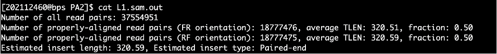
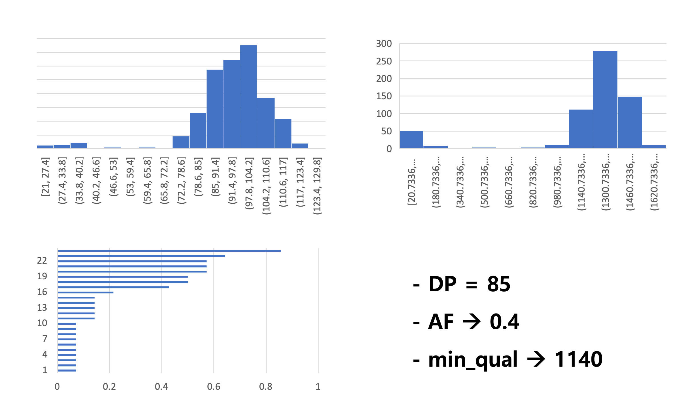

🎓 Education
🧬 Biomedical Science & Engineering
🧪 노화생물학 (Aging Biology) (2025)
Design of Cell Cycle Reprogramming Strategies
Design of Immune System Reprogramming Strategies
- Investigated tumor cell cycle control and immune evasion mechanisms in aging-related dysfunction.
- Proposed combinational immunotherapy using CD56dim NK cells and mut06 CAR-T cells.
- Designed IL-15-expressing CIML NK cell strategies for long-term immune surveillance.
- Compared IL-15 regulation systems and off-target control via uPA activity.
💻 의생명데이터처리및실습 (Biomedical Data Processing and Lab.) (2023)
The Analysis of Genome Sequence Variants
- 1) Checking the quality of read sequences
- 2) Trimming read sequences
- 3) Mapping read sequences to reference genome sequences

- 4) Calling sequence variants by comparing with reference genome sequences

The Analysis of Genome Rearrangements
- 1) Checking the quality of read sequences
- 2) Trimming read sequences
- 3) Performing genome assembly
- 4) Analyzing genome rearrangements by comparing with genome sequences of other species